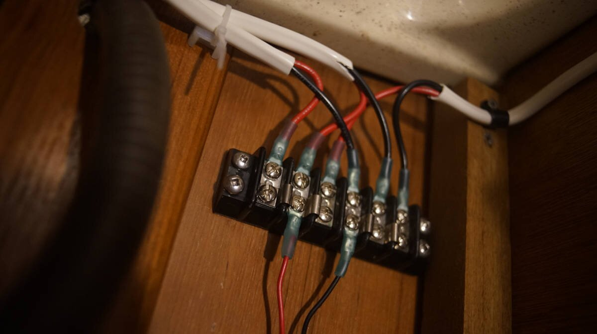

marine wire termination

The above is a connection we found in Pino's ceiling while re-doing the wiring, this is how a previous owner spliced some of the cabin lights together. This splice was tinned, and bound by electrical tape. Making connections like this was more common in the 80's, but doesn't fly in 2022. On a boat there is a lot of movement, and vibrations, which overtime can loosen the connection.
The major difference between a thing that might go wrong and a thing that cannot possibly go wrong is that when a thing that cannot possibly go wrong goes wrong it usually turns out to be impossible to get at and repair.
— Douglas Adams
List of connection DONT's
- Never use electrical tape over connections
- Never solder wires together, they ought to be mechanically connected
- Never twist wires together (too much resistance)
- Never connect wires together with household "wire nuts"
- Never wrap a bare wire around a terminal screw to connect wires together
List of connection DO's
- Use terminals that are made from tin plated copper, not aluminum
- Use only plastic, not metal, clips to secure the wiring
- Use ring terminals over spade terminals, ring terminal can't pull off
- After crimping, always do a pull test(to make sure it won't come apart)
- Always cover crimped connections with heat-actived, adhesive-lined heat shrink tubing
- Use a heat gun for uniform heat-shrinking, an open flame will lead to uneven melting of the adhesive, distortions in the insulation and can lead to leaks, bubbles & voids
- Use a good quality crimper that can double crimp
Do your hands a favor, get/borrow good tools. Pino has a shitty wire stripper/crimper that destroys all it touches, including our fingers. A friend lent us his Ancor crimp tool.

Ring connectors are sized to wires, and are color-coded for each gauge size:
Pink - 22-18 AWG
Yellow - 12-10 AWG
Blue - 16-14 AWG
Using butt connectors to splice wires? We've been splicing wires together with butt connectors for a while now, sometimes it is the only option available. It is always better to use uncut wire, and if possible to make the splice using a gang terminal bus.
Splicing circuits should be avoided. If splicing is necessary, it should employ a proper terminal block, and not butt connectors. Every splice in a circuit creates additional resistance, and the potential for the connection to come apart.
— David H. Pascoe, Marine Surveyor